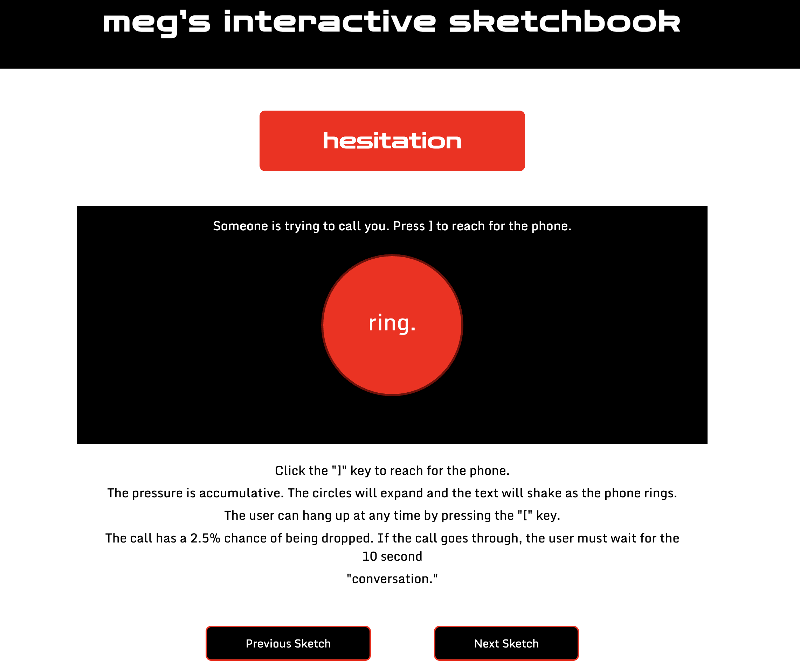

Click Here for Live Sketchbook Link

So far, I have been able to apply my previous, working micro-project code into the new design somewhat seamlessly. The interaction still functions, but now it is structured with a header and format compatible with my wireframes. I was surprised at how little I needed to change overall, just adding and adjusting much of the existing code and reorganizing some things. It helps that I had a solid idea of layout and format, so I was able to pretty directly translate my ideas into code. I ran into some issues with initial coding, as my canvas completely disappeared at one point and all I was left with was text on the screen, but with some fiddling I was able to work it out. The html seemed to assume hierarchy in text, but the canvas was put on the back burner, which was not ideal. The hierarchy translates well from my Figma, but I may need to adjust text sizing going forward. I was able to keep my color palette from my original sketch, which I think will call for adjustments in hierarchy later. The canvas, after figuring out how to get it back, appears smaller on the interface that I thought it would when I designed the wireframes. I may need to adjust the size of the canvas later in order to fit the interaction and have it work and look as it should. Additionally, I omitted the menu button in the top left corner that was previously included in my wireframe. I kept the navigation keys at the bottom of the page to one day cycle through sketches, though they do not function correctly yet. This means there is no easy reversal of actions, no back button, which could be frustrating for a user, but I will keep working at it. Nothing breaks as far as I know, but there are certainly some aspects that don’t yet work as I want them to. My next steps will include trying to get those buttons to function, and adjusting the hierarchy to better fit the assumed layout of the html, and fit all of the information more easily on the page. I will also work on translating my mobile wireframes to code, which I believe will be harder as I do not yet have mobile specific code to reference.